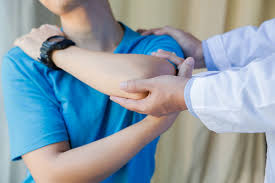
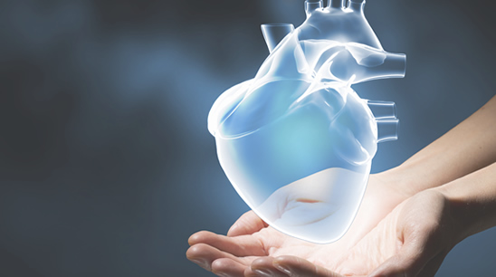
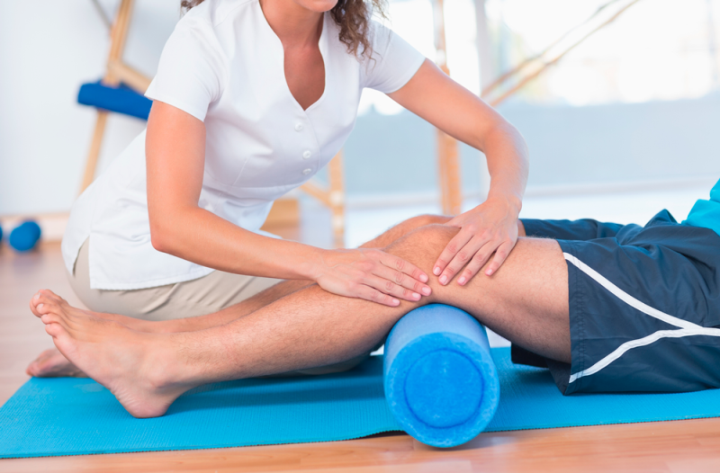
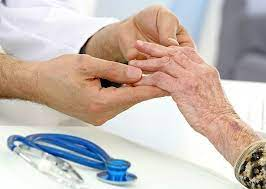

A Fisioterapia para Crianças ou Fisioterapia Pediátrica,tem como objectivos principais tratar disfunções, recuperar movimentos, tratamentos neurológicos, problemas respiratórios, recuperar lesões ortopédicas, através de técnicas específicas para bebés e crianças
Que casos neurológicos?
A Fisioterapia para crianças está assim indicada em casos neurológicos como:
- A Paralisia Cerebral;
- Problemas no sistema respiratório como bronquiolite;
- Em casos ortopédicos como as fraturas
Fisioterapia na Saúde do Idoso
Os pacientes idosos estão sendo os mais afetados pela pandemia do novo corona vírus, o COVID 19. A fragilidade na saúde desse público que geralmente tem doenças associadas é o principal motivo se serem mais vulneráveis as doenças infectocontagiosas. Dentre as doenças comuns nos idosos que é negligenciada, e que afeta fortemente sua saúde e qualidade de vida, é a anemia por deficiência de ferro.

Fisioterapia na Saúde do Trabalhador
Fisioterapia do Trabalho tem como foco o bem-estar, a qualidade de vida e melhoria da saúde do trabalhador. Esses pontos refletem e influem em todas as áreas e hierarquias do ambiente do trabalho, desde o profissional atuante na produção até aquele que trabalha na alta administração. Para algumas pessoas, o ambiente de trabalho acaba sendo um local de pouco conforto e muito desgaste emocional e físico, o que pode ocasionar problemas físicos e mentais aos trabalhadores e prejudicar a vida pessoal e profissional.

Fisioterapia Cardiorespiratória
A Fisioterapia cardiorrespiratória tem como objetivo melhorar a condição cardiopulmonar, física, mental e social, proporcionando uma vida ativa e produtiva para os pacientes portadores de cardiopatias e/ou doenças respiratórias. Os Fisioterapeutas elaboram programas de exercícios visando melhorar a capacidade aeróbica, a função cardiovascular e pulmonar desses indivíduos. Além disso, supervisionam individualmente cada paciente durante realização das atividades e monitoram seus dados vitais.

Fisioterapia Ortopédica
A Fisioterapia é uma das áreas da saúde em constante expansão e com demanda de profissionais qualificados no mercado de trabalho e um dos fatores que acarretam essa crescente procura são os atuais hábitos de vida da população.
A sociedade contemporânea estabelece um ritmo acelerado às pessoas, que vivem em uma constante corrida contra o tempo. Dessa forma, a todo o momento, há um desafio a ser superado. Nessa rotina permanente, em que a população encontra poucos intervalos para o descanso e práticas esportivas, a qualidade de vida, muitas vezes, é colocada em segundo plano, uma decisão que pode vir a comprometer a saúde e permitir o surgimento de novas doenças.

Fisioterapia Reumática
A fisioterapia em reumatologia é uma área de atuação que busca promover a qualidade de vida e a promoção da saúde em indivíduos com doenças reumáticas.
As doenças reumáticas caracterizam-se por manifestações crônicas e degenerativas que geram limitações das atividades de vida diária. Dores, redução dos movimentos articulares, recrutamento neuromuscular inadequado, perda do condicionamento cardiovascular e respiratório, alterações do trofismo da pele, além de transtornos em outros sistemas, fazem parte do conjunto de incapacidades apresentadas por estes indivíduos[